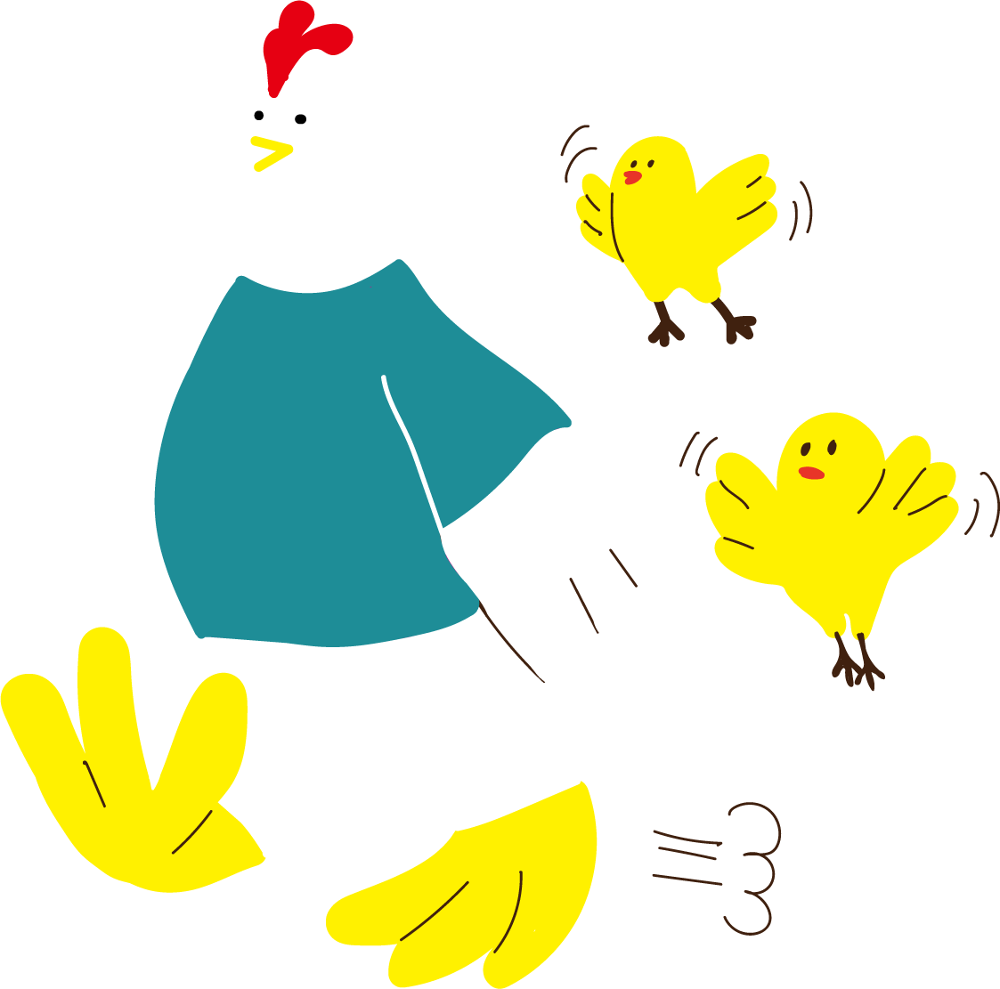

<!DOCTYPE html>
<html lang="ja">
<head>
    <meta charset="UTF-8" />
    <meta name="viewport" content="width=device-width, initial-scale=1.0" />
    <!-- リセットCSS -->
    <link href="../assets/css/destyle.css" rel="stylesheet" />
    <!-- 共通CSS -->
    <link href="../assets/css/common.css" rel="stylesheet" />
    <link href="../assets/css/footer.css" rel="stylesheet" />
    <!-- GoogleFonts -->
    <link rel="preconnect" href="https://fonts.googleapis.com">
    <link rel="preconnect" href="https://fonts.gstatic.com" crossorigin="anonymous">
    <link href="https://fonts.googleapis.com/css2?family=Open+Sans:ital,wght@0,300..800;1,300..800&amp;family=Zen+Maru+Gothic:wght@300;400;500;700;900&amp;display=swap" rel="stylesheet">

    <title>とくしま習いごとナビ TOPページ</title>
</head>

<body>

    <footer>
        <!-- Topへ戻るボタン -->
        <a href="#">
            
        </a>
        <div class="footer__container">
            <div class="footer__links">
                <ul>
                    <li><a href="./search/results.html">条件検索</a></li>
                    <li><a href="./question.html">徳島の習いごと事情</a></li>
                    <li><a href="./column/column_list.html">コラム</a></li>
                    <li><a href="./news/news_list.html">新着情報</a></li>
                    <li><a href="./favorite/favorite.html">お気に入りリスト</a></li>
                    <li><a href="./contact/input.html">お問い合わせ</a></li>
                </ul>
            </div>
            <div class="footer__info">
                <ul>
                    <li><a href="./about/about.html">このサイトについて</a></li>
                    <li><a href="./rule/rule.html">利用規約</a></li>
                    <li><a href="./privacy/privacy.html">プライバシーポリシー・免責事項</a></li>
                </ul>
            </div>
            <div class="footer__illustration">
                
            </div>
        </div>
        <div class="footer__bottom">
            <small>&copy;QLIP とくしま習いごとナビ</small>
        </div>
    </footer>
    <!-- jQuery -->
    <script src="https://cdnjs.cloudflare.com/ajax/libs/jquery/3.7.1/jquery.min.js" integrity="sha512-v2CJ7UaYy4JwqLDIrZUI/4hqeoQieOmAZNXBeQyjo21dadnwR+8ZaIJVT8EE2iyI61OV8e6M8PP2/4hpQINQ/g==" crossorigin="anonymous"></script>
    <!-- common.js -->
    <script src="../assets/js/common.js"></script>

</body>
</html>
